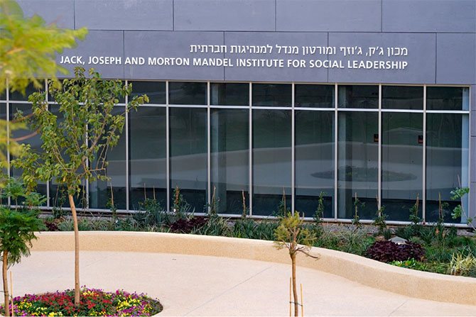
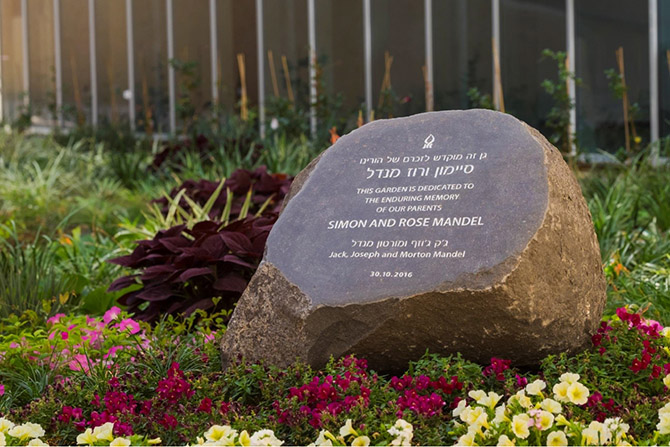

בטקס חגיגי שנערך ב-30 באוקטובר 2016 נחנך בניין מכון ג'ק, ג'וזף ומורטון מנדל למנהיגות חברתית באוניברסיטת בן-גוריון בנגב. הטקס נערך בגן היפהפה על שם סיימון ורוז מנדל, המשתרע בין המבנה החדש של המכון לבין בניין הפקולטה לניהול ע"ש גילפורד גלייזר.
 מימין לשמאל: פרופ' רבקה כרמי, מורטון ל. מנדל, רוביק דנילוביץ ופרופ' עודד לוונגרט (צילום: דני מכליס, באדיבות אוניברסיטת בן-גוריון בנגב)
מימין לשמאל: פרופ' רבקה כרמי, מורטון ל. מנדל, רוביק דנילוביץ ופרופ' עודד לוונגרט (צילום: דני מכליס, באדיבות אוניברסיטת בן-גוריון בנגב)המכון, שמטרתו לחזק את ישראל באמצעות קידום המגזר השלישי, מעניק סביבה ייחודית שבה סטודנטים ואנשי סגל יכולים לרכוש ידע ניהולי ולהעמיק במחקר בתחום האחריות החברתית. המכון כולל את
תכנית מנדל MBA למנהיגות חברתית – תכנית ייחודית המשלבת קורסי ליבה במנהל עסקים עם לימודי מנהיגות חברתית – ומתכנן
פעילויות לטיפוח מנהיגות, המיועדות למנהלים פעילים בעולם המלכ"רים. המכון הוא אכסניה גם למרכז הישראלי לחקר המגזר השלישי, המקיים מחקר, עוסק בניתוח מדיניות ומשמש כמשאב לארגוני המגזר השלישי בישראל.
בטקס נשאו דברים יו"ר קרן מנדל
מר מורטון ל. מנדל, נשיאת אוניברסיטת בן-גוריון
פרופ' רבקה כרמי, ראש עיריית באר שבע
מר רוביק דנילוביץ ודיקן הפקולטה לניהול ע"ש גילפורד גלייזר,
פרופ' עודד לוונגרט. בין האורחים היו
פרופ' יהודה ריינהרץ, נשיא קרן מנדל,
מר סטיבן הופמן, סגן יו"ר קרן מנדל,
גב' אנט הוכשטיין, הנשיאה-לשעבר של הקרן בישראל,
מר משה ויגדור, מנכ"ל קרן מנדל-ישראל, ופרופ' עמוס דרורי, סגן הנשיא לשעבר של אוניברסיטת בן-גוריון.

צילום: דני מכליס, באדיבות אוניברסיטת בן-גוריון בנגב
"הסוד טמון באנשים", אמרה נשיאת אוניברסיטת בן-גוריון פרופ' רבקה כרמי, "זה לא רק שם ספרו של מורטון מנדל. אלה כישורי הניהול שלו, הסגנון, האופן שבו הוא בוחר את שותפיו ואת ידידיו, האופן שבו הוא חי". היא הודתה ליו"ר קרן מנדל על שותפותו וידידותו, והוסיפה: "נדיבותך, ויותר מכך, ההדרכה הנבונה שלך, תובנותיך הבהירות... הם חוויה של פעם בחיים בשבילי – השראה מדהימה".
ראש העירייה רוביק דנילוביץ שיבח את מר מנדל על תרומתו העצומה לעיר באר שבע: "זה סמלי שאנחנו חונכים את הבניין הזה כאן, באוניברסיטת בן-גוריון, בצד שדרת בן-גוריון בעיר באר שבע, כי אין שותפים יותר גדולים לחזון מאשר בן-גוריון ומורט מנדל". בפנייה לסטודנטים במוסד הוסיף: "להיות בוגר של התכנית הזאת, זה אומר שיש מכם ציפיות גדולות לקחת את המושכות ולעשות משהו. משהו לטובת העיר, משהו לטובת המדינה, משהו לטובת החברה הישראלית, משהו לטובת העולם כולו".
"זה רגע נפלא בשבילי", אמר יו"ר קרן מנדל מורטון ל. מנדל. "אני מודה לכם על שאתם מגשימים לי את החלום", אמר.
הבניין החדש והיפה, הממוקם בקצה המערבי של הקמפוס, תוכנן על-ידי משרד האדריכלים פלסנר, והוא משלב פונקציונליות עם אסתטיקה. קרבתו לשיכוני שכונה ד' בבאר שבע איננה מקרית, ונועדה לחזק את הקשר בין הלימודים האקדמיים לבין צורכי השטח.

צילום: דני מכליס, באדיבות אוניברסיטת בן-גוריון בנגב
כמה משיאיו של הטקס היו חנוכת הגן על שם סיימון ורוז מנדל – הוריהם של ג'ק, ג'וזף ומורטון מנדל; טקס גזירת הסרט; הענקת מפתח הבניין למר מורטון מנדל; וטקס קביעת המזוזה לבניין החדש. לפני חנוכת הבניין והגן הוטמנה בבניין קפסולת זמן ובה תיעוד פעילותן המשותפת של קרן מנדל ושל אוניברסיטת בן-גוריון בנגב. קפסולת הזמן תיפתח ב-2066.
לאחר חנוכת הבניין נערך טקס הסיום של תלמידי המחזור השלישי בתכנית מנדל MBA במִנהל עסקים, אשר כבר החלו את דרכם בהובלת יוזמות חברתיות בנגב.
{kind=link}
{kind=link}